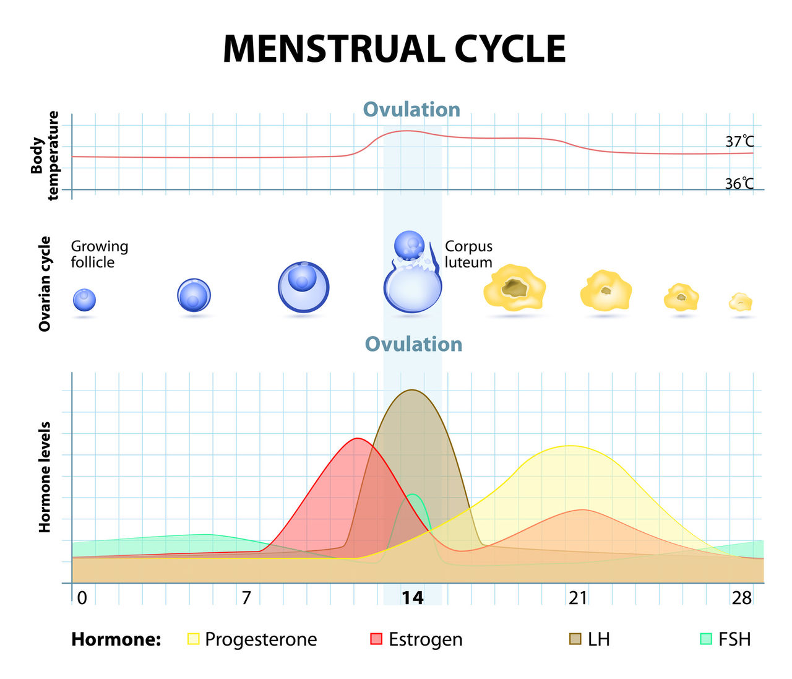

이 페이지에서 살펴볼 내용
한방여성의학
여자의 일생에 5번은 해온한의원, 한의학과 만나게 됩니다.
초경初經
생리가 안정되는 18세까지
어린이에서 어른으로 신체가 크게 변화되는 시기입니다. 정신적으로 신체적으로 성장 속도가 다른 경우가 많기 때문에 심신의 균형이 깨어지기 쉽고 질병이 생기기 쉽습니다.
생리통, 여드름, 빈혈 등
임신姙娠
사랑의 결실로 아이가 생깁니다.
얼핏 자연스러운 과정으로 보여지기도 합니다. 다만 누군가에게는 말 못하는 고민이 되는 경우도 있습니다. 아이를 임신하고 출산을 준비하는 과정을 전문가가 함께합니다.
임신준비, 무월경, 난임 등
출산出産
출산의 두려움과 육아의 고됨이 혼재합니다. 무엇보다 출산 후 건강한 회복이 중요합니다. 동양인의 체질, 체형적인 특성을 고려해 난소 자궁 및 전신 균형을 회복시키기 위해 체계적인 관리가 필요한 시기입니다.
산후조리, 산후풍, 알러지 등
완경完經
40대 중반부터 난소기능은 급격하게 저하됩니다. 열감, 식은땀, 불안우울감, 근육통이 여기저기 함께 나타납니다. 여자이기에 맞이하는 또 한번의 큰 신체변화, 조금 더 자연스럽게 안정적으로 건강을 관리합니다.
갱년기장애, 불안증, 홧병 등
노년老年
60-70세이후 노년기, 여성호르몬의 분비가 없어지고 신체의 노화가 진행됩니다. 관리를 어떻게 하느냐에 따라 이후의 삶의 질이 현격하게 차이납니다. 몸과 마음의 아픔까지 함께 공감하는 건강 관리가 함께합니다.
관절증, 변비, 피부소양증 등
월경, 그리고 여성호르몬의 변화
Estrogen, Menstural Cycle Wheel
여성의 몸을 설명하면서 빠뜨릴 수 없는 여성호르몬의 대표적인 것이 에스트로겐(난포호르몬)입니다.
여성의 일생, 건강사이클은 바로 이 에스트로겐에 크게 영향을 받고 있는 것이죠.
에스트로겐이 만들어지는 것은 사춘기에 들어 초경을 맞이한 시점부터 이후 급격히 양이 증가하여 20-40대초반에 피크를 맞이하고, 임신과 출산, 수유에 적합한 상태에서 육아가 일단락되는 50세 전후에서 분비량이 점차 줄어들게 됩니다.
따라서 에스트로겐은 기혈의 흐름과 매우 밀접한 관련이 있는 호르몬입니다.
결국 기혈을 조절한다는 것은 에스트로겐의 균형을 관리한다는 것과 같은 의미입니다.
월경주기는 여성 건강의 척도
여성에게 있어서 월경의 양, 주기, 기간, 상태에 대한 관찰은 무엇보다 중요합니다.
사실 여행 등의 일정이 있거나 중요한 일이 코앞에 닥친다면, 귀찮고 불편할 수 있는 것이 월경입니다.
하지만 정상적인 월경은 호르몬 밸런스가 균형있다는 것과 몸이 아이를 낳을 수 있는 상태라는 것을 알리는 소중한 '알람'입니다.
오히려 생리기간이 제각각이거나,
월경 양이 비정상적으로 많거나 적거나 생리가 사라지는 것이 심각한 징후랍니다.
'월경(생리)가 정상적인 것이 건강하다는 것'
피하기 보다는 적극적으로 익숙해져가는 것이 좋습니다.
여성의 몸은 약 1개월 주기(평균28일)로 변화를 거듭하고 있습니다.
건강한 여성이라면 정기적으로 월경이 오므로, 이를 통해 '몸의 변화'를 자각하게됩니다. 몸 안에 여성호르몬과 여성호르몬을 길항하는 호르몬이 그 시기에 맞게 늘어나거나 줄어들 수 있습니다. 또한 이로 인해 자궁이나 난소의 상태도 늘 변화하며 고정되지 않습니다.
월경주기를 기준으로 난포기-배란기-황체기의 과정을 거치게 됩니다. 스무살 전에 생물시간에나 들었을 어려운 표현들이지만 이 시기에 맞게 몸, 특히 자궁과 난소, 호르몬의 변화가 있는 시기입니다.

이 안내는 건강에 대한 이해를 돕는 참고 정보입니다. 증상과 질환에 대한 정확한 판단은 의료진의 진료가 필요합니다.